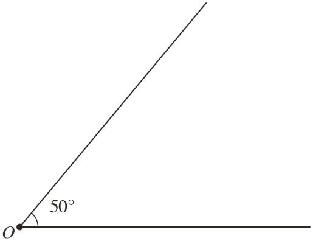
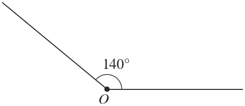

Westonbirt Maths · Constructions and Circle Properties
Constructing an Angle Bisector
Name: ______________________ Date: ____________
1
Bisect the angle using compasses. Check each half with a protractor.

2
Bisect the angle using compasses. Check each half with a protractor.

3
To bisect an angle, Pam draws equal arcs from the ends of the two arms, without an arc from first. Why can this go wrong?
4
After angle is bisected, each half is What was angle ?
5
A right angle is bisected, and then one half is bisected again. What angles do you get?
Ext
Construct an angle of with a ruler and compasses only.